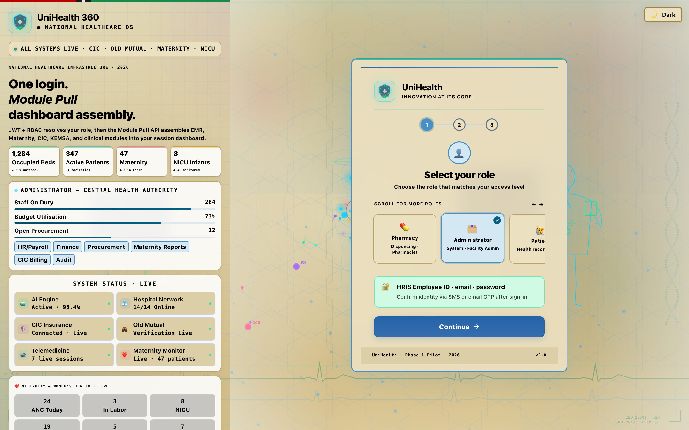
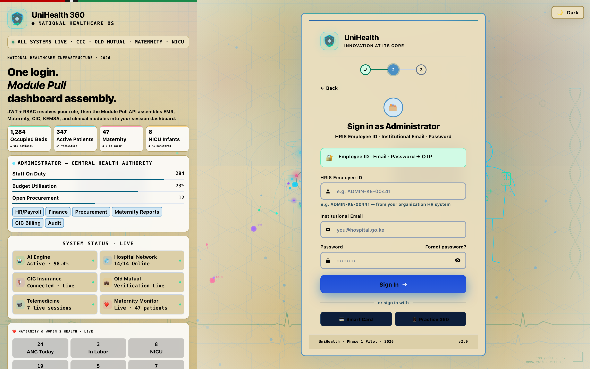
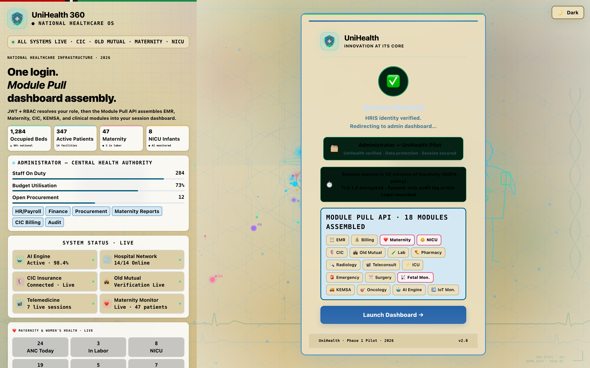
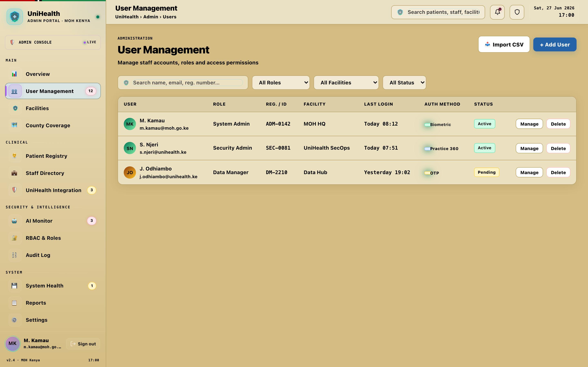
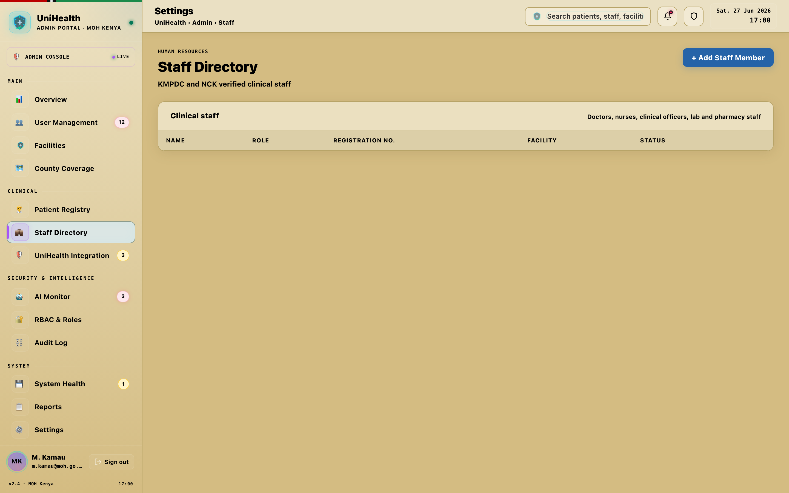
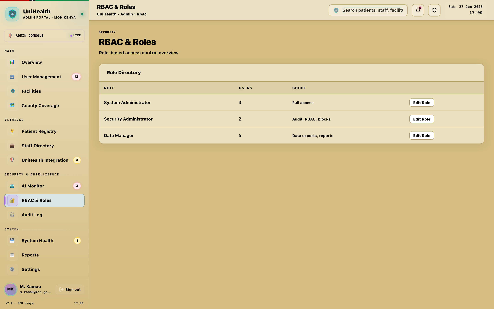

Administrator Dashboard Manual
Facility control, users, RBAC, AI monitoring, and system administration.
1. Sign-in — Administrator
Administrators manage users, facilities, integrations, and security from the Admin Console.
Step 1 — Select role
The Administrator tile is highlighted in the role carousel. The audit panel logs authentication events for compliance.

The Administrator tile is highlighted in the role carousel. The audit panel logs authentication events for compliance.
Step 2 — Enter credentials
Enter HRIS Employee ID (e.g. ADMIN-KE-00441), email, and password.

Enter HRIS Employee ID (e.g. ADMIN-KE-00441), email, and password.
Step 3 — Verify MFA
Enter the six-digit OTP sent to your institutional email. In staging/demo, use Practice 360 or OTP 123456.

Enter the six-digit OTP sent to your institutional email. In staging/demo, use Practice 360 or OTP 123456.
Step 4 — Launch dashboard
Confirms Administrator — UniHealth Pilot. Full admin console access granted.

Confirms Administrator — UniHealth Pilot. Full admin console access granted.
2. Dashboard layout
Admin Console sidebar spans main operations, clinical registries, security, and system settings.
| Zone | Purpose |
|---|---|
| Main | Overview, users, facilities, county coverage |
| Clinical | Patient registry, staff directory, UniHealth integration |
| Security & Intelligence | AI monitor, RBAC, audit log |
| System | Health, reports, settings |
3. Main tabs
Overview

System KPIs, quick actions, facility status, and live metrics.
User Management

Create, edit, disable users; assign roles and facilities.
Facilities

Facility registry, levels, latency, and connection status.
County Coverage

Geographic coverage map and county-level stats.
4. Clinical registry tabs
Patient Registry

Search and manage registered patients across facilities.
Staff Directory

Clinical and operational staff roster.
UniHealth Integration

Claims, biometric, and Practice 360 integration status.
5. Security & system tabs
AI Monitor

AI tier usage, anomaly counts, and WebSocket connection stats.
RBAC & Roles

Role definitions and permission matrix.
Audit Log

System-wide audit events and export.
System Health

Gateway, database, and service health checks.
Reports

Operational and compliance report generation.
Settings

Policy toggles, feature flags, and facility defaults.
6. Tips & troubleshooting
Recommended workflow
- Review Overview for alerts and offline facilities.
- Process User Management requests from HR.
- Scan Audit Log for failed auth attempts.
- Check System Health before go-live windows.
Common issues
| Issue | Action |
|---|---|
| Cannot create user | Verify RBAC permissions and unique email |
| Facility shows offline | Check gateway and KMHFL sync job |
| Metrics stale | Prometheus/metrics endpoint on :8100 |